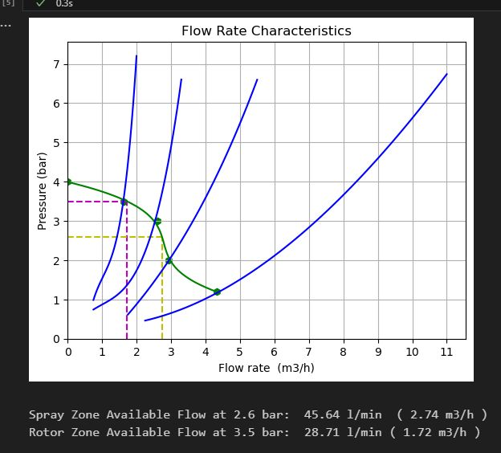
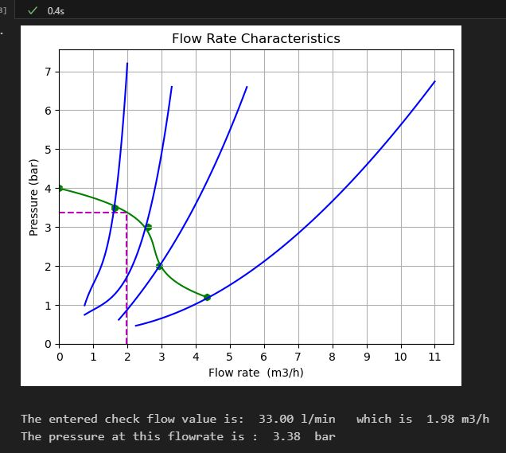
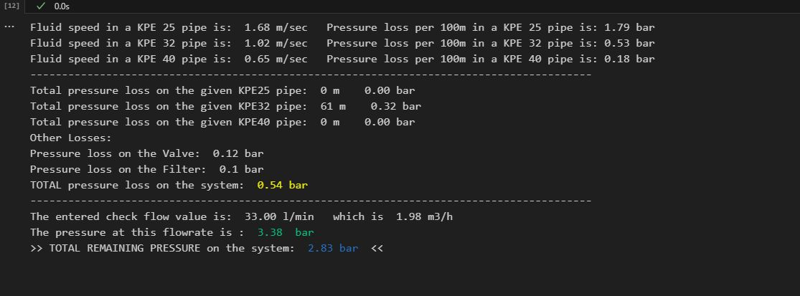

Water Flow Characteristics Calculations Program
This program aims to determine the characteristics of water flow from a given source. Its primary objective is to calculate the available flow rate at a specified pressure, providing crucial information for the design of an irrigation system. The measurement process is straightforward and involves an instrument with a pressure gauge, along with four nozzles of varying internal diameters.
Github repository of this project
The following steps outline the procedure:
1. Connect the instrument to the water source and attach the first nozzle.
2. Fully open the water source and record the pressure reading.
3. Repeat the above step with the remaining three nozzles, resulting in a total of four measurements.
4. Additionally, measure the static pressure at the water source when the flow rate is zero.
5. Utilize the pressure data to determine the flow rate for each nozzle by referring to a calibration diagram.
Draw a horizontal line at the measured pressure and note the intersection point with the respective calibration curve for the first nozzle.
6. Repeat the above process for the remaining nozzles, as well as the static pressure. This will yield a total of five points.
7. Finally, manually connect these points to form a curve.
To simplify and expedite this process, a Python program has been developed to automate the calculations.
The program includes the following features:
1. Digitization of the four nozzle curves: The curves are generated using polynomial regression, and all the corresponding values are stored in a lookup table.
2. Inclusion of pipe characteristics: The program incorporates additional pipe-related parameters for further calculations.
3. User inputs: The program allows the user to enter the desired flow rate, enabling the calculation of the available pressure.
Furthermore, inputs for pipe length, type, pressure loss on the valve, and filter can also be specified.
The final output of the program presents the results in a user-friendly manner, facilitating efficient analysis and design considerations.
  